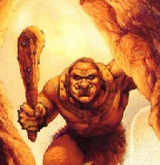

TROLL

Long hidden within the sanctity of their mountain caves, a race known in the
past only as a myth, lies the civilization of the trolls. Built with the
undying stamina of the mountains they reside in, these green skinned beasts
often grow to obtain a state of health few other races believed possible.
Hindered by their slow intellect and mobility, the troll society seems to
have decided as a whole to rejoin the races of the realms, moving out of
their sanctuaries in numbers reaching high into the thousands
The base exp for Trolls:
Warrior = 1400 Ranger = 1600 AntiPaladin = 1700